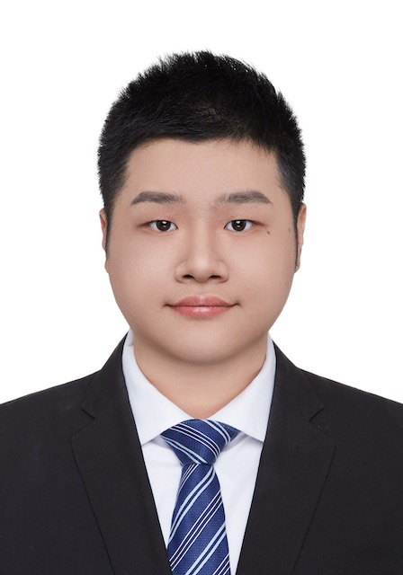

Ph.D. in Artificial IntelligenceSep 2024 – Jun 2028 (expected)
Gaoling School of Artificial Intelligence, Renmin University of China · Advisor: Prof. Yong Liu

Mechanism analysis and theory of Large Language Models (LLMs) — including chain-of-thought reasoning, slow-thinking and policy optimization, synthetic data, LLM alignment, and the theoretical foundations of machine learning.